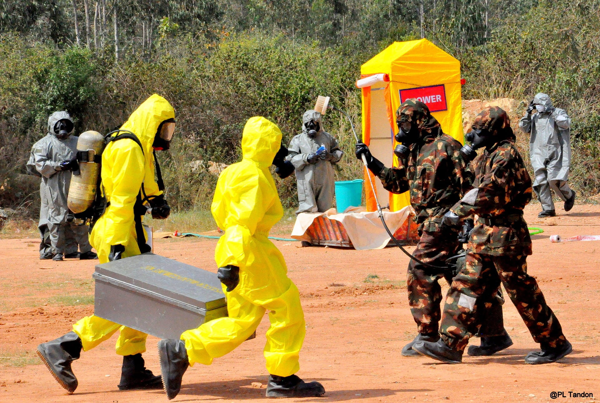

Biological Emergency Survival Guide
Before
- Watch television, listen to the radio, or surf the Internet for official news of any outbreak.
- Practice good hygiene and keep your premises clean.
- Use mosquito nets/repellents at night.
- Boil water before drinking. Chlorinate it if possible.
- Thoroughly wash all vegetables/fruits before cooking/eating.
- Use insecticides to contain the vectors.
- Don’t consume stale or contaminated food products.
- Immediately report any sickness with unusual and/or suspicious symptoms in the family/neighborhood to health authorities.
- Seek medical attention if you are sick; keep a stock of your regular prescribed medicines.
During
- Keep distance from and avoid direct contact with the affected person.
- Avoid going to crowded areas.
- Use a respiration mask for protection.
After
- Follow official instructions and help authorities dispose of contaminated items such as food, poultry, crops, vectors, and other materials, if advised.
- Ensure that all the required immunizations are done and necessary precautions taken.